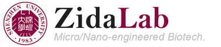
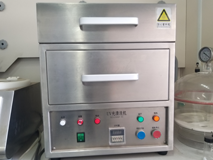
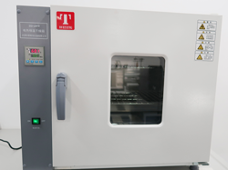
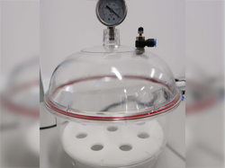
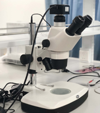

概况
课题组拥有良好的实验平台，包括一般用途的实验台、软光刻设备、成像设备、细胞培养设备等。

实验台1

实验台2
微加工
- PDMS 软光刻工艺
- 真空设备
- 烘箱
- 紫外臭氧清洗
- 注射泵
- 等离子体清洗（权限）
- 激光雕刻机（权限）
- 超临界干燥（Leica，权限）
- 标准光刻工艺（SU-8，硅刻蚀等；外包）
- 南方科大微纳加工中心（权限）
部分设备如下图。

PDMS工作区域

紫外臭氧清洗机

烘箱

真空设备

微量注射泵
成像设备
- 倒置相差显微镜（Nikon Ts2）
- 体视显微镜（Motic SMZ）
- 数码显微镜（Dino-Lite）
- 研究级倒置荧光显微镜（Nikon Eclipse Ti2-E）
- 激光共聚焦显微镜（Leica TCS SP5II，权限）
- 扫描电子显微镜（权限）
- 高速摄像机（Phantom，权限）
部分设备如下图。

Nikon Ts2 倒置相差显微镜

Motic 体视显微镜
Nikon Eclipse Ti2-E 荧光显微镜
Dino-Lite 数码显微镜
细胞培养设备
- 洁净间
- 生物安全柜、洁净工作台等
- 4, -20, and -80 ℃ 冰箱
- 高温灭菌
- 细胞培养箱
- 常规生物分析设备（权限）
部分设备如下图。
细胞培养洁净间

生物安全柜
洁净工作台
高温灭菌锅
细胞培养箱
English | 中文